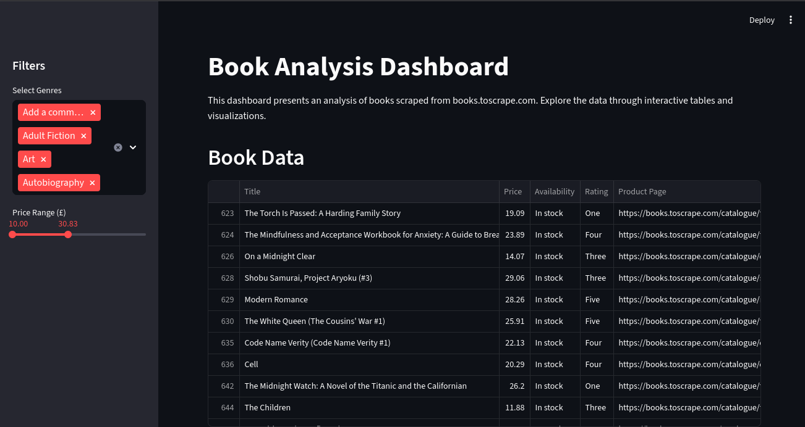
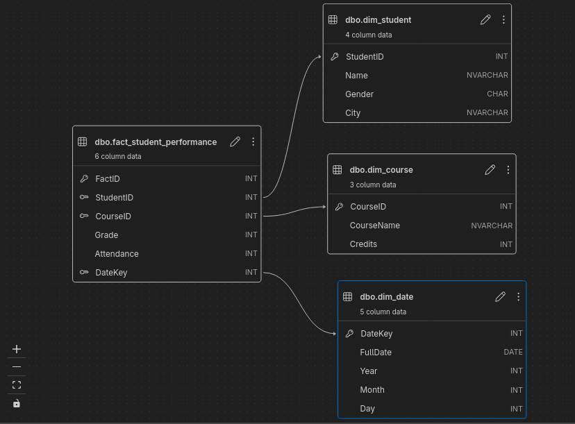

Web Scraping & Data Engineering with Python | Delivering reliable, structured data for smarter decisions
Contact MeI am a Computer Science student and Data Engineering intern with a passion for transforming raw data into meaningful insights. My focus is on building reliable data solutions that empower decision-making.
My journey began at STEM High School, where I worked on real-world projects like climate change solutions and learned Python early. Since then, I’ve developed a strong mix of technical expertise and problem-solving mindset to deliver clean, reliable, and ready-to-use data for clients and projects.
Alexandria University · 2023 – 2027 (Expected)
Currently in 3rd year
Focus on Data Engineering, Databases, Python, and Data Warehousing
High School Diploma · 2020 – 2023
Specialized in Science, Technology, Engineering, and Mathematics (STEM)
Worked on real-world projects addressing global issues like climate change
June 2025 – December 2025 (Expected)
June 2024 – December 2024

Built a web scraping tool to extract structured data from a library website. Processed and exported data into CSV for analysis, then used Streamlit to create an interactive dashboard with visual insights.
View Repo
Designed and implemented a basic ETL process in Python. Extracted data from SQLite and plain text files, loaded it into SQL Server, and structured a warehouse for efficient storage and retrieval.
View Repo